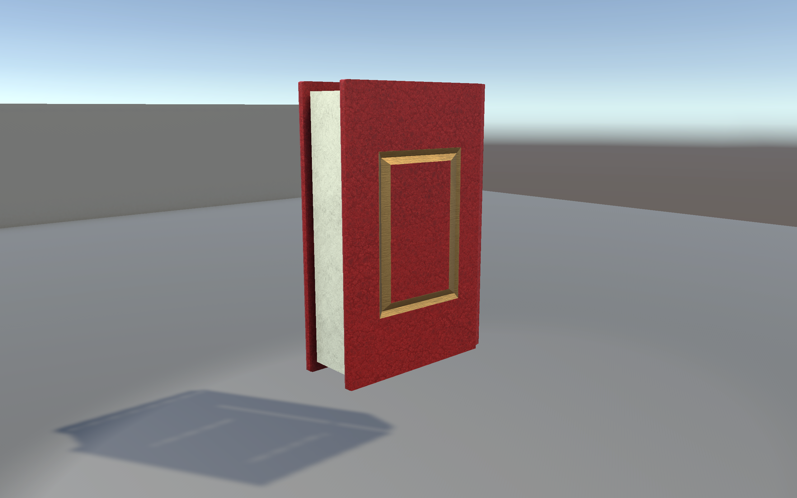
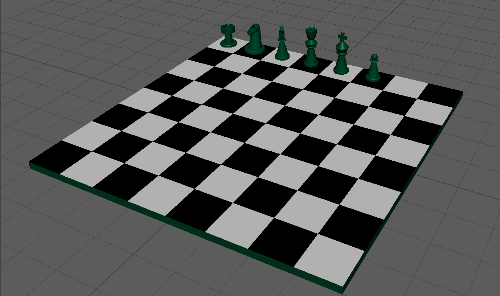

Handy Man

In Handy-Man, you play as Hank, a handy man who contorts his hand into various tools to get the job done. Complete tasks while trying not to lose too much blood and be a contributing member of society.
- Collaborated with a team of four to design and program a game in Monogame using C#
- Designed and coded main game systems and mechanics as lead programmer
- Built external Windows Forms applications with C# to streamline production of game level designs
- Co-managed group and tracked goals, milestones, and productivity
Scream Strong

In this dark puzzle-based platformer, the player finds themselves dragged from sleep by a group of monsters and into a dark maze, where they must learn to scream loud enough to escape.
- Built a 2D platformer level from a Unity template with customized assets and conceptualized story
- Conceptualized game story and created 2D animation intro video to game
- Designed and implemented 2D asset designs using Adobe Photoshop and Krita
Plinko

Built as an academic assignment, this assignment features a plinko game with customized pegs that have different unique features.
- Built scene in Unity using sprites, custom prefabs, and UI objects.
- Wrote custom MonoBehavior scripts to create game functionality.
- Customized pegs which rotate and move back and forth.
Textured 3D Model of Book

Modeled, textured, and placed custom book model and texture into a Unity scene.
- Modeled book prop using Autodesk Maya.
- Textured prop in Adobe Substance Painter.
- Imported model and texture files into Unity, and added textured model to a simple scene.
3D Modeled Chess Set

Modeled a chess set in Autodesk Maya and placed them on a basic chess board.
- Modeled each chess piece based off of references in Maya and altered their tetxure to change their color.
- Added a basic chess board to the scene and used a basic texture to create the colored squares of the board.
This Website!

Built a portfolio website based off a chosen print design using HTML and CSS.
- Used HTML to add content to the website.
- Used CSS to create responsive grid layouts which display content depending on screen size.